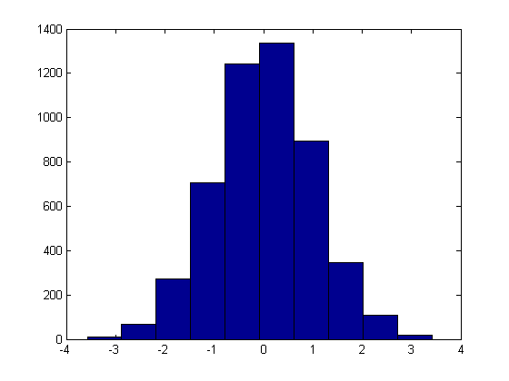
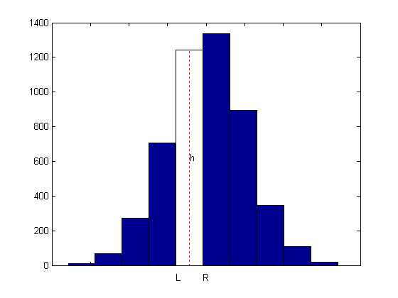
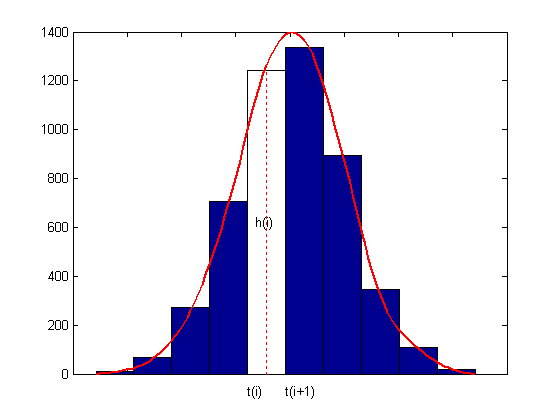

Histogram approximations
Copyright 1987-2003 C. de Boor and The MathWorks, Inc. $Revision: 1.11 $ $Date: 2003/02/13 23:14:34 $
We would like to derive from this histogram a smoother approximation to the underlying distribution. We do this by constructing a spline function f whose average value over each bar interval equals the height of that bar. Here are the two commands that generated the histogram shown:
y = randn(1,5001); hist(y);
If h is the height of one of these bars, and its left and right edge are at L and R, then we want our spline f to satisfy
integral { f(x) : L < x < R }/(R - L) = h ,
or, with F the indefinite integral of f, i.e., DF = f,
F(R) - F(L) = h*(R - L).
[heights,centers] = hist(y); hold on set(gca,'XTickLabel',[]) n = length(centers); w = centers(2)-centers(1); t = linspace(centers(1)-w/2,centers(end)+w/2,n+1); p = fix(n/2); fill(t([p p p+1 p+1]),[0 heights([p p]),0],'w') plot(centers([p p]),[0 heights(p)],'r:') h = text(centers(p)-.2,heights(p)/2,' h'); dep = -70;tL = text(t(p),dep,'L'); tR = text(t(p+1),dep,'R'); hold off
So, with t(i) the left edge of the i-th bar, dt(i) its width, and h(i) its height, we want
F(t(i+1)) - F(t(i)) = h(i) * dt(i), i=1:n,
or, setting arbitrarily F(t(1)) = 0,
F(t(i)) = sum {h(j)*dt(j) : j=1:i-1}, i=1:n+1.
Add to this the two end conditions DF(t(1)) = 0 = DF(t(n+1)), and we have all the data we need to get F as a complete cubic spline interpolant, and its derivative, f = DF, is what we want and plot, all in one statement.
set(h,'String','h(i)') set(tL,'String','t(i)') set(tR,'String','t(i+1)') dt = diff(t); hold on fnplt(fnder(spline(t,[0,cumsum([0,heights.*dt]),0])), 'r',2); hold off
Here is an explanation of the one-liner we used:
>> fnplt(fnder(spline(t,[0,cumsum([0,h.*dt]),0])),'r',2)
Fvals = cumsum([0,h.*dt]); % provides the values of F at t
F = spline( t , [0, Fvals, 0]); % constructs the cubic spline interpolant,
% with zero endslopes, to these values
DF = fnder(spline); % computes its first derivative
fnplt(DF, 'r', 2) % plots DF, in red with linewidth 2